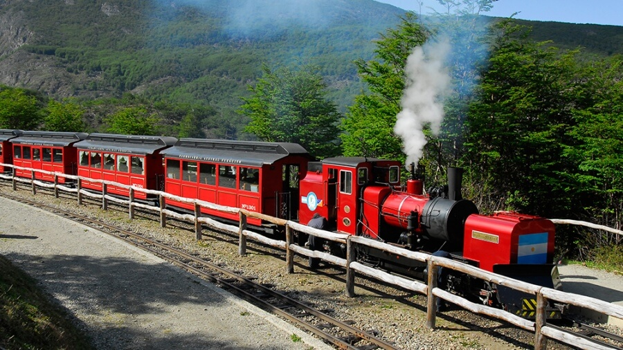
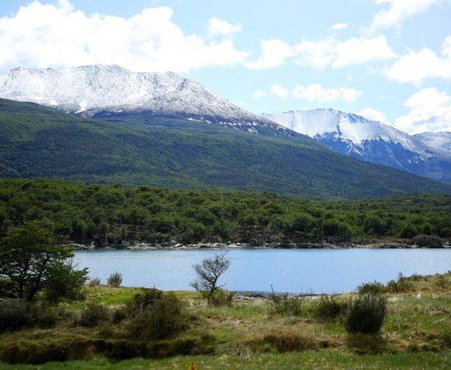

descubri ushuaia


mi historia como guia local
excuriones destacadas

Atravesando bosques y turbales, esta laguna enclavada entre montañas te invita a contemplar su belleza luego de una mañana de trekking en el fin del mundo.

Un paseo a bordo de una locomotora a vapor, que combina la historia penal de Ushuaia con los impresionantes paisajes del Parque Nacional Tierra del Fuego.

Un paisaje impactante formado por lagos, valles, extensas turberas y un exclusivo sitio de nuestro país en el que los bosques patagónicos llegan hasta la costa marina